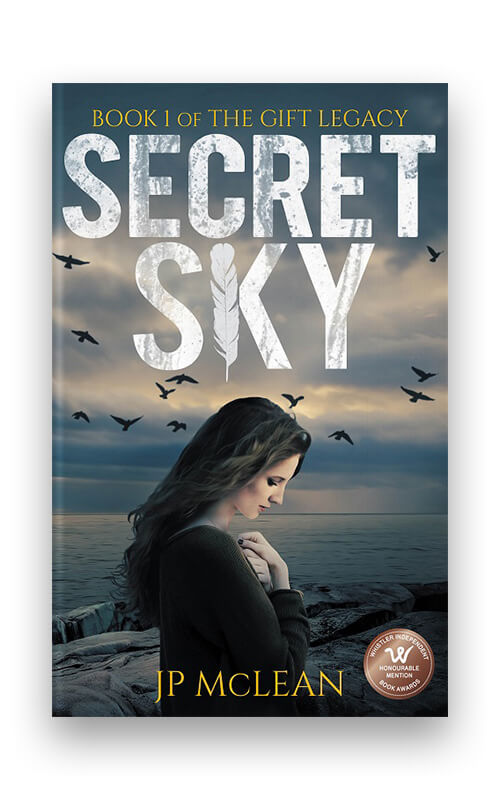

<!DOCTYPE html>
<html lang="en">

<head>
    <meta charset="UTF-8">
    <meta http-equiv="X-UA-Compatible" content="IE=edge">
    <meta name="viewport" content="width=, initial-scale=1.0">
    <title>Document</title>
    <link rel="stylesheet" href="./book.css">
</head>

<body>

</html>

</html>

</html>

</html>
<div>
    <h2 id="q1">"Titanic.... with magic"</h2>
    <h3 id="q2">THE DEATH OF MAGIC </h3>
    <h2 id="q3">Marisa Mills</h2>

    <p>
        When Arabella North-Heaven returns home to her home in the gated city of seolford,her exictement at finally
        attending the accademy of mages is quelled by her surprise engagement. Determine to master her spellwork quicky
        and
        uncover the mysterious threat that's worrying her father,she makes friends with alocal barmaiad to practice
        magic in
        secret.But when the villagers are uprooted from their homes and the mages seize their supplies,she realize the
        threat is far graver than she ever imagined.In race against time ,can Arabella make it back to seolford before
        everything she knows is lost forever? </p>
</div>
<div>
    <h2 id="w1">SECRET SKY</h2>
    <h3 id="w2">J P MCLEA</h3>
    
    <P>Secret sky is the first book in the thrilling,otherworldly The Gift Legacy series by JP MCLean. Seamlessy
        blending paranormal mystery,fantasy,and romance adventure, this beautiful written and deeply resonant adventure
        will swoop you into a vivid, new reality and leave your imagination soaring.</P>
</div>
<div>
    <h2>THE ACTS OF LIFE</h2>
    <h3>KRISTIN MULLIGAN</h3>
    
    <p>Sam and Stella are close than most brothers and sisters.Born only minutes apart,they grew up to be best friends
        and lifelong adversaries.Sam's twin sister put the"rival" in siblings rivalry.Sam ignores stella's competive
        nature about who's living a better life.So what if his law degree isn't getting much use. And his sunday are
        spent hung -over with his buddies. Despite Stella's opposite, sam is happy.</p>
</div>
<div>
    <h4>THE IMPERFECTION OF</h4>
    <h2>MEMORIES</h2>
    <h3>ANGELINA ALUDO</h3>
    
    <p>The memories of angelina after the death of siri his friend realise the things that go through siri in his
        life.The book took us to the world of memory and there is so many situation that she cant explain to other but
        the memories of tape hear by his boyfriend fell more love to him after birth.Memories of siri of another world
        is explian clearly in the book.Its very intresting when we go through his thought at last his wishes is still
        reamin after his death and sam do it for her.</p>
</div>
</body>

</html>